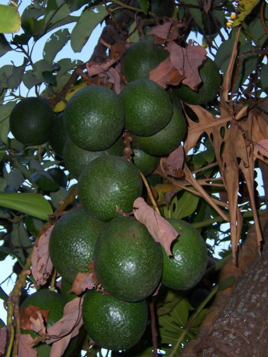

| |
| Carrots |
| Twinkies |
| Avocado |
| Pineapple |
| Turkey Sandwiches |
| Mangoes |
| Pizza |
| Potatoes |
| Other Resources |
The avocado is a fruit, and the pit is its seed. Plant the avocado seed, and what do you get? An avocado plant! You won’t get new avocados from your plant unless you plant it outside somewhere where it’s warm all the time and it has enough room to grow into a tree, but it will still be a nice green plant. With avocado pits, you need to suspend the pit so that only its bottom is in a jar of water, and then wait a long time. You’ll use toothpicks to keep the pit suspended in the jar. Make sure your seed isn’t split. This won’t work if it is. Wash the avocado seed, and try to get most of its brown skin off. Stick 3 toothpicks into the seed around its middle, sort of like arms and a long nose. Put the seed on a jar so that the toothpicks are on the top edge of the jar and the bottom of the seed (the round end, not the pointed one) is hanging into the jar. Fill the jar with lukewarm water just enough so that the seed is a little less than half covered. Keep the jar someplace shady where it won’t get cold. Change the water once a week or it will get gross, and add water in between changes to keep the level a little below the middle of the seed. It may seem like forever until the seed starts to sprout roots--it could be anywhere from 3 weeks, to 3 months. When the roots are about 3 inches long, it’s going to need soil. Choose a container about the size of a flowerpot or the bottom half of a 1/2 gallon milk carton, and fill it with soil up to a few inches below the top. Make a little hole in the soil that’s big enough for the roots, and gently put the seed in the hole. Put soil around the seed so that only the top half sticks out. Add water to the soil so it’s damp but not like a puddle, and put the container in a sunny spot. Water it often enough so that the soil stays damp, and no more! Once a week will probably be enough. A little more patience, and soon you’ll have a beautiful avocado plant!
|

An avocado seedling with roots and seed
(Creative Commons Attribution 2.5 License Wikimedia user Mers8)

Avocados growing on a tree
(Creative Commons Attribution 2.5 License Wikimedia user B.navez)
(Top avocado Creative Commons Attribution 2.5 License Wikimedia user Merops)